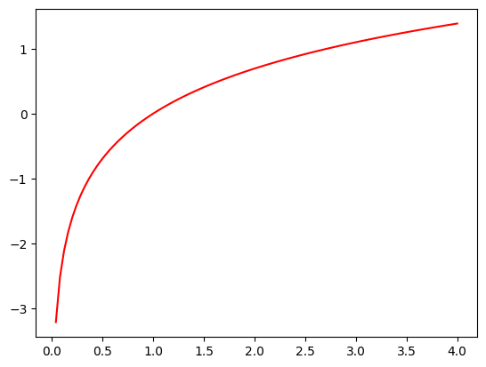
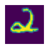

from fastai.vision.all import *Implementing an MNIST Classifier From Scratch
deep learning
python
In this blog post, I write a
MNISTLearner class which trains a neural net to classify the full MNIST dataset of 10 handwritten digits.
Background
In this notebook, I’ll work through the second “Further Research” exercise at the end of Chapter 4 of the Practical Deep Learning for Coders textbook:
Complete all the steps in this chapter using the full MNIST datasets (for all digits, not just 3s and 7s). This is a significant project and will take you quite a bit of time to complete! You’ll need to do some of your own research to figure out how to overcome obstacles you’ll meet on the way.
Plan of Attack
I’ll start by reviewing each step of the training loop covered in this chapter (for 3s and 7s) and identify what elements need to change, why, and an a brief outline of how, in order to accommodate for all 10 digits.
Load and Prep Data
In the chapter, we stacked tensor images of each digit to create n x 28 x 28 tensors (where n is the number of images in the training or validation folder) and then converted them to n x 784 tensors so that each pixel was in a one-dimensional row (corresponding to 784 parameters in the neural net in a one-dimensional row).
To handle all 10 digits, I’ll need to expand this logic without too much hard-coding—I don’t want to create 10 tensors individually (stacked_zeros, stacked_ones, …, stacked_tens) for training and validation data.
Instead, I’ll use list comprehension. First, let’s look at how to access all the subfolders in the train and valid parent folders:
path = untar_data(URLs.MNIST)
100.03% [15687680/15683414 00:00<00:00]
path.ls()(#2) [Path('/root/.fastai/data/mnist_png/training'),Path('/root/.fastai/data/mnist_png/testing')]Independent Variable: Images
I can iterate through (path/'training').ls() to see the 10 digit subfolders containing training images for the digits:
[path for path in (path/'training').ls()][Path('/root/.fastai/data/mnist_png/training/8'),
Path('/root/.fastai/data/mnist_png/training/6'),
Path('/root/.fastai/data/mnist_png/training/3'),
Path('/root/.fastai/data/mnist_png/training/1'),
Path('/root/.fastai/data/mnist_png/training/9'),
Path('/root/.fastai/data/mnist_png/training/2'),
Path('/root/.fastai/data/mnist_png/training/0'),
Path('/root/.fastai/data/mnist_png/training/4'),
Path('/root/.fastai/data/mnist_png/training/7'),
Path('/root/.fastai/data/mnist_png/training/5')]Taking it one layer deeper, I can nest a second list comprehension which collects individual file paths from each of the digit’s folders:
training_files = [[file for file in path.ls()] for path in (path/'training').ls().sorted()]Here are the paths to the first 5 images in the first folder, which corresponds to the digit 0:
training_files[0][:5][Path('/root/.fastai/data/mnist_png/training/0/35012.png'),
Path('/root/.fastai/data/mnist_png/training/0/2009.png'),
Path('/root/.fastai/data/mnist_png/training/0/14472.png'),
Path('/root/.fastai/data/mnist_png/training/0/7589.png'),
Path('/root/.fastai/data/mnist_png/training/0/53401.png')]And the paths to the first 5 images in the second folder, which corresponds to the digit 1:
training_files[1][:5][Path('/root/.fastai/data/mnist_png/training/1/47434.png'),
Path('/root/.fastai/data/mnist_png/training/1/27790.png'),
Path('/root/.fastai/data/mnist_png/training/1/42000.png'),
Path('/root/.fastai/data/mnist_png/training/1/15633.png'),
Path('/root/.fastai/data/mnist_png/training/1/21958.png')]And so on for all 10 digits
training_files[9][:5][Path('/root/.fastai/data/mnist_png/training/9/57008.png'),
Path('/root/.fastai/data/mnist_png/training/9/28984.png'),
Path('/root/.fastai/data/mnist_png/training/9/36162.png'),
Path('/root/.fastai/data/mnist_png/training/9/42013.png'),
Path('/root/.fastai/data/mnist_png/training/9/18296.png')]len(training_files)10I’ll illustrate the same for the validation set:
validation_files = [[file for file in path.ls()] for path in (path/'testing').ls().sorted()]validation_files[0][:5][Path('/root/.fastai/data/mnist_png/testing/0/9095.png'),
Path('/root/.fastai/data/mnist_png/testing/0/5990.png'),
Path('/root/.fastai/data/mnist_png/testing/0/7505.png'),
Path('/root/.fastai/data/mnist_png/testing/0/157.png'),
Path('/root/.fastai/data/mnist_png/testing/0/5838.png')]validation_files[9][:5][Path('/root/.fastai/data/mnist_png/testing/9/2009.png'),
Path('/root/.fastai/data/mnist_png/testing/9/7298.png'),
Path('/root/.fastai/data/mnist_png/testing/9/5565.png'),
Path('/root/.fastai/data/mnist_png/testing/9/9483.png'),
Path('/root/.fastai/data/mnist_png/testing/9/5705.png')]len(validation_files)10Next, I’ll flatten the list of training and validation files, convert each to a stacked tensor, convert the pixel values to floating point values, and divide by 255 so the pixel values are between 0 and 1. I referenced this Stack Overflow post for flattening a nested list.
To understand how it works, I find it easier to read left-to-right, broken up into two separate parts:
file for (sublist in training_files) for (file in sublist)In pseudocode:
populate this list with each file in each sublist in `training_files`training_files = [file for sublist in training_files for file in sublist]
validation_files = [file for sublist in validation_files for file in sublist]The dataset’s Wikimedia page says that it has 60,000 training images and 10,000 testing images. This matches the counts here:
len(training_files), len(validation_files)(60000, 10000)I’ll open a couple of the files and make sure I can view the images as expected:
# this should be an image of a handwritten zero
show_image(tensor(Image.open(training_files[0])));
# this should be an image of a handwritten nine
show_image(tensor(Image.open(training_files[-1])));# this should be an image of a handwritten zero
show_image(tensor(Image.open(validation_files[0])));# this should be an image of a handwritten nine
show_image(tensor(Image.open(validation_files[-1])));Looks good! The images are as expected. I can now move on to creating stacked floating point tensors of the training and validation images:
train_x = torch.stack([tensor(Image.open(o)) for o in training_files]).float()/255
train_x.shapetorch.Size([60000, 28, 28])valid_x = torch.stack([tensor(Image.open(o)) for o in validation_files]).float()/255
valid_x.shapetorch.Size([10000, 28, 28])I’ll view my data one more time before changing its shape:
# this should be a zero
show_image(train_x[0]);# this should be a nine
show_image(train_x[-1]);# this should be a zero
show_image(valid_x[0]);
# this should be a nine
show_image(valid_x[-1]);
Great! I’ll flatten the images so that they are 784 pixels long, instead of a 28 x 28 matrix.
train_x = train_x.view(-1, 28*28)
train_x.shapetorch.Size([60000, 784])valid_x = valid_x.view(-1, 28*28)
valid_x.shapetorch.Size([10000, 784])Dependent Variable: Labels
Now that I have the x (independent) variable data prepared, I’ll do the same for the y (dependent) variable data—the labels for the images.
I’ll reuse my training_files and validation_files lists as they already contain the paths to each image file, from which I’ll extract the label. path.parts splits the path into a tuple of its individual parts (split by “/”). The parent folder (the second-to-last part of the path) of the path is the label of the image.
training_labels = [int(path.parts[-2]) for path in training_files]
training_labels[0], training_labels[-1](0, 9)validation_labels = [int(path.parts[-2]) for path in validation_files]
validation_labels[0], validation_labels[-1](0, 9)train_y = tensor(training_labels).unsqueeze(1)
train_y.shapetorch.Size([60000, 1])valid_y = tensor(validation_labels).unsqueeze(1)
valid_y.shapetorch.Size([10000, 1])Excellent! Now with the data in the right structure, I’ll create a DataLoaders object that will be fed to the learner during training:
dset = list(zip(train_x, train_y))
x,y = dset[0]
x.shape, y(torch.Size([784]), tensor([0]))valid_dset = list(zip(valid_x, valid_y))
x,y = valid_dset[0]
x.shape, y(torch.Size([784]), tensor([0]))dl = DataLoader(dset, batch_size=256)
xb,yb = first(dl)
xb.shape, yb.shape(torch.Size([256, 784]), torch.Size([256, 1]))valid_dl = DataLoader(valid_dset, batch_size=256)
valid_xb, valid_yb = first(valid_dl)
valid_xb.shape, valid_yb.shape(torch.Size([256, 784]), torch.Size([256, 1]))I combine the two DataLoaders into a single DataLoaders object:
dls = DataLoaders(dl, valid_dl)And check that they contain the right amount of data:
len(dls.train.dataset), len(dls.valid.dataset)(60000, 10000)Great! With my DataLoaders prepared, I can move on to other aspects of the training loop that will need to be modified to handle 10 digits instead of 2.
Create Our Model
Here is the existing model that we’re using to classify two digits:
simple_net = nn.Sequential(
nn.Linear(28*28, 30),
nn.ReLU(),
nn.Linear(30, 1)
)It has 784 inputs and 1 output. For 10 digits, I need to adjust th number of outputs to 10:
simple_net = nn.Sequential(
nn.Linear(28*28, 30),
nn.ReLU(),
nn.Linear(30,10)
)I assume that since we have more final activations, we would also need to increase the intermediate activations from 30 to a larger number, but I’ll keep it at 30 for now and then make improvements once I’ve actually got a successful training loop.
Create a Loss Function
This is the main change that will take place in our training loop: using a loss function that can handle 10 digits instead of 2. In the exercise prompt, they said that we would need to:
do some of your own research to figure out how to overcome obstacles you’ll meet on the way
And I think this is probably the main obstacle to overcome. In the textbook chapter, when they trained the dataset using the built-in Learner, they passed it F.cross_entropy as the loss function:
learn = vision_learner(dls, resnet18, pretrained=False, loss_func=F.cross_entropy, metrics=accuracy)
In the text, they introduce Cross-Entropy Loss in Chapter 5, so I’ll take a detour through that chapter’s relevant sections to inform me on how to create a loss function for a 10-digit classifier.
Cross-Entropy Loss
- Works even when our dependent variable has more than two categories.
- Results in faster and more reliable training.
As is done in the book example, I’ll view one batch of our data:
x,y = dls.one_batch()
y[:10]tensor([[0],
[0],
[0],
[0],
[0],
[0],
[0],
[0],
[0],
[0]])Currently, my data is not shuffled, so all the 0s are first, then all the 1s, 2s, …, and 9s. This doesn’t seem like a great way to train the model since it will learn only 1 digit’s features in each batch. I’ll recreate the DataLoaders and pass the parameter value shuffle=True:
dl = DataLoader(dset, batch_size=256, shuffle=True)
xb,yb = first(dl)
yb[:10]tensor([[5],
[4],
[1],
[3],
[0],
[3],
[7],
[2],
[3],
[0]])valid_dl = DataLoader(valid_dset, batch_size=256, shuffle=True)
valid_xb, valid_yb = first(valid_dl)
valid_yb[:10]tensor([[4],
[7],
[9],
[6],
[1],
[8],
[9],
[5],
[3],
[0]])dls = DataLoaders(dl, valid_dl)len(dls.train.dataset), len(dls.valid.dataset)(60000, 10000)Now, when I look at one batch, I can see a variety of labels:
x,y = dls.one_batch()
y[:10]tensor([[8],
[3],
[2],
[7],
[3],
[9],
[1],
[6],
[0],
[7]])The output predictions of the model will contain 10 predictions (one for each digit) that add up to 1. According to Chapter 5, we need to use the softmax function to achieve a result like this.
Softmax
Assume we have a scenario with 6 images and 2 possible categories (3 and 7):
torch.random.manual_seed(42);acts = torch.randn((6,2))*2
actstensor([[ 0.6734, 0.2576],
[ 0.4689, 0.4607],
[-2.2457, -0.3727],
[ 4.4164, -1.2760],
[ 0.9233, 0.5347],
[ 1.0698, 1.6187]])We can’t just take the sigmoid of this directly since we want rows to add up to 1.0 (i.e., we want the probability of being a 3 plus the probability of being a 7 to add up to 1).
acts.sigmoid()tensor([[0.6623, 0.5641],
[0.6151, 0.6132],
[0.0957, 0.4079],
[0.9881, 0.2182],
[0.7157, 0.6306],
[0.7446, 0.8346]])In the binary case, a single pair of activations simply indicates the relative confidence of the input being a 3 versus being a 7. The overall values, whether they are both high or both low, don’t matter—all that matters is which is higher and by how much.
We can take the difference between the neural net activations because that reflects how much more sure we are of the input being a 3 than a 7, and then take the sigmoid of that:
(acts[:,0] - acts[:,1]).sigmoid()tensor([0.6025, 0.5021, 0.1332, 0.9966, 0.5959, 0.3661])The second column (the probability of it being a 7) will then just be that value subtracted from 1. The function softmax does this for any number of columns:
def softmax(x): return torch.exp(x) / torch.exp(x).sum(dim=1, keepdim=True)sm_acts = softmax(acts)
sm_actstensor([[0.6025, 0.3975],
[0.5021, 0.4979],
[0.1332, 0.8668],
[0.9966, 0.0034],
[0.5959, 0.4041],
[0.3661, 0.6339]])softmax is the multi-category equivalent of sigmoid. We have to use it any time we have more than two categories and the probabilities of the categories must add up to 1. Taking the exponential ensures all of our numbers are positive, and then dividing by the sum ensures that we are going to have a bunch of numbers that add up to 1.
softmax is the first part of the cross-entropy loss, the second part is log likelihood.
Log Likelihood
When we calculated the loss for our MNIST example, we used:
def mnist_loss(inputs, targets):
inputs = inputs.sigmoid()
return torch.where(targets==1, 1-inputs, inputs).mean()We need to extend the loss function to work with more than just binary classification.
Our activations after softmax are between 0 and 1, and sum to 1 for each row in the batch of predictions, our targets are integers between 0 and 9.
Let’s say these are our labels:
targ = tensor([0,1,0,1,1,0])And these are the softmax activations:
sm_actstensor([[0.6025, 0.3975],
[0.5021, 0.4979],
[0.1332, 0.8668],
[0.9966, 0.0034],
[0.5959, 0.4041],
[0.3661, 0.6339]])Then for each item of targ, we can use that to select the appropriate column of sm_acts using tensor indexing like this:
idx = range(6)
sm_acts[idx, targ]tensor([0.6025, 0.4979, 0.1332, 0.0034, 0.4041, 0.3661])As long as the activation columns sum to 1 (as they will if we use softmax), we’ll have a loss function that shows how well we’re predicting each digit.
Making the activation for the correct label as high as possible must mean we’re also decreasing the activations of the remaining columns.
PyTorch provides nll_loss which does the same thing as sm_acts[range(n), targ] except it takes the negative because when applying log afterwards we want negative numbers:
-sm_acts[idx, targ]tensor([-0.6025, -0.4979, -0.1332, -0.0034, -0.4041, -0.3661])F.nll_loss(sm_acts, targ, reduction='none')tensor([-0.6025, -0.4979, -0.1332, -0.0034, -0.4041, -0.3661])Taking the log
Here’s a plot of the log function
def plot_function(f, title=None, min=-2.1, max=2.1, color='r', ylim=None):
x = torch.linspace(min,max, 100)[:,None]
if ylim: plt.ylim(ylim)
plt.plot(x, f(x), color)
if title is not None: plt.title(title)plot_function(torch.log, min=0, max=4)
We want to transform our probabilities to larger values so we can perform mathematical operations on them. We also want our model to learn the difference between 0.99 and 0.999 (the latter is 10 times more confident). We can use the logarithm function to transform our numbers between 0 and 1 to instead be between negative infinity and positive infinity.
Applying negative log to the softmax output:
targtensor([0, 1, 0, 1, 1, 0])sm_actstensor([[0.6025, 0.3975],
[0.5021, 0.4979],
[0.1332, 0.8668],
[0.9966, 0.0034],
[0.5959, 0.4041],
[0.3661, 0.6339]])sm_acts[idx, targ]tensor([0.6025, 0.4979, 0.1332, 0.0034, 0.4041, 0.3661])-torch.log(sm_acts[idx, targ])tensor([0.5067, 0.6973, 2.0160, 5.6958, 0.9062, 1.0048])The loss is larger for incorrect predictions (2.0160 for the third image with activations of 0.1332 for 3—the target value—and 0.8668 for 7) and for unconfident correct predictions (5.6958 for the fourth image with activations of 0.9966 for 3 and 0.0034 for 7—the target value).
PyTorch provides the nn.CrossEntropyLoss class and the F.cross_entropy function:
F.cross_entropy(acts, targ, reduction='none')tensor([0.5067, 0.6973, 2.0160, 5.6958, 0.9062, 1.0048])nn.CrossEntropyLoss(reduction='none')(acts, targ)tensor([0.5067, 0.6973, 2.0160, 5.6958, 0.9062, 1.0048])Create a Function to Calculate Predictions, Loss and Gradients
In this section, the text has the following function to calculate predictions, loss and gradients:
def calc_grad(xb, yb, model):
preds = model(xb)
loss = mnist_loss(preds, yb)
loss.backward()I don’t think anything needs to be changed here. In my implementation of a BasicLearner I have generalized that function as:
def calc_grad(self, xb, yb, model):
preds = self.model(xb)
loss = self.loss_func(preds, yb)
loss.backward()I believe that should work fine with nn.CrossEntropyLoss() as the function assigned to my self.loss_func parameter.
Create an Optimizer
The optimizer’s functionality (stepping the parameters and setting the gradients to zero) will not need to be changed to handle 10 digits.
Create a Function to Train One Epoch
The steps needed to train an epoch will not need to be changed to handle 10 digits:
def train_epoch(model):
for xb,yb in dl:
calc_grad(xb, yb, model)
opt.step()
opt.zero_grad()Create a Function to Calculate a Metric for One Batch
Along with the loss function, this is the second big change when dealing with 10 digits instead of 2. Currently, in text, we use a batch_accuracy function as the metric during training:
def batch_accuracy(xb, yb):
preds = xb.sigmoid()
correct = (preds>0.5) == yb
return correct.float().mean()For each batch the following steps take place in calculating accuracy:
- Calculate the sigmoid value of the predictions.
- Determine which predictions are greater than 0.5 and if they are, whether they are correctly labeled as
3s. - Return the mean value of the previous tensor, which will calculate as number of correct predictions / number of total predictions.
To understand how to calculate accuracy for a dataset with 10 digits, I’ll create an example calculation similar to what they did in chapter 5 for illustrating the softmax/log likelihood example. Suppose we have 6 images with 10 possible categories (0, 1, 2, 3, 4, 5, 6, 7, 8, 9) and 6 labels:
torch.random.manual_seed(42);acts = torch.randn((6,10))*2
actstensor([[ 3.8538, 2.9746, 1.8014, -4.2110, 1.3568, -2.4691, -0.0861, -3.2093,
-1.5043, 3.2974],
[-0.7850, -2.8072, -1.4558, -1.1189, -1.5377, 1.5249, 3.2846, -0.3192,
-0.9948, 0.8792],
[-1.5163, 2.1566, 1.6016, 3.3612, 2.5582, 2.5928, 1.2209, 2.6695,
-0.4632, 0.0835],
[-0.5032, 1.7197, -2.7693, -1.7425, -0.4467, 3.4347, 0.6378, -0.8490,
0.6114, -1.5492],
[-3.1151, 1.9913, -1.7596, -1.2023, 0.7345, 0.3508, 2.7703, -0.8917,
2.8903, 1.7128],
[ 4.4362, 1.0463, 2.3507, 1.1223, -0.9055, -1.5436, -0.3444, 1.0476,
0.1132, 0.8526]])targ = tensor([1,6,4,5,8,0])We take the softmax of the activations so that each row sums to 1:
sm_acts = torch.softmax(acts, dim=1)
sm_actstensor([[4.4919e-01, 1.8645e-01, 5.7688e-02, 1.4122e-04, 3.6982e-02, 8.0615e-04,
8.7362e-03, 3.8453e-04, 2.1156e-03, 2.5751e-01],
[1.2639e-02, 1.6728e-03, 6.4621e-03, 9.0509e-03, 5.9539e-03, 1.2731e-01,
7.3978e-01, 2.0136e-02, 1.0246e-02, 6.6747e-02],
[2.4815e-03, 9.7686e-02, 5.6077e-02, 3.2583e-01, 1.4597e-01, 1.5110e-01,
3.8323e-02, 1.6314e-01, 7.1126e-03, 1.2288e-02],
[1.4239e-02, 1.3148e-01, 1.4766e-03, 4.1232e-03, 1.5065e-02, 7.3058e-01,
4.4562e-02, 1.0075e-02, 4.3404e-02, 5.0024e-03],
[8.6558e-04, 1.4289e-01, 3.3576e-03, 5.8621e-03, 4.0662e-02, 2.7705e-02,
3.1141e-01, 7.9971e-03, 3.5109e-01, 1.0816e-01],
[7.7830e-01, 2.6240e-02, 9.6708e-02, 2.8313e-02, 3.7265e-03, 1.9688e-03,
6.5311e-03, 2.6273e-02, 1.0321e-02, 2.1619e-02]])sm_acts.sum(dim=1)tensor([1.0000, 1.0000, 1.0000, 1.0000, 1.0000, 1.0000])The model’s prediction is the digit (index) with the largest probability.
sm_acts.max(dim=1).indicestensor([0, 6, 3, 5, 8, 0])The accuracy is the average of the following boolean tensor (the number of correct predictions / the number of total predictions):
sm_acts.max(dim=1).indices == targtensor([False, True, False, True, True, True])(sm_acts.max(dim=1).indices == targ).float().mean().item()0.6666666865348816As a function, this is what batch_accuracy would look like for the 10-digit classifier:
def batch_accuracy(xb, yb):
preds = torch.softmax(xb, dim=1)
preds = preds.max(dim=1).indices
return (preds == yb).float().mean().item()Create a Function to Calculate the Metric for One Epoch
This function will be the same for the 10-digit classifier as it was for the 2-digit classifier:
def validate_epoch(model):
accs = [batch_accuracy(model(xb), yb) for xb,yb in valid_dl]
return round(torch.stack(accs).mean().item(), 4)Create a Function for the Training Loop
This function will be the same for the 10-digit classifier as it was for the 2-digit classifier:
def train_model(model, epochs):
for i in range(epochs):
train_epoch(model)
print(validate_epoch(model), end=' ')MNIST Training Loop
With that overview under my belt, I’ll walk through the training loop with real code and data.
Load and Prep Data
I’ve already loaded and prepared a shuffled DataLoaders object, so in this step all I need to do is check it’s size and shape:
len(dls.train.dataset), len(dls.valid.dataset)(60000, 10000)x,y = first(dls.train)
x.shape, y.shape(torch.Size([256, 784]), torch.Size([256, 1]))x,y = first(dls.valid)
x.shape, y.shape(torch.Size([256, 784]), torch.Size([256, 1]))# check that the digits are shuffled
y[:5]tensor([[6],
[8],
[2],
[0],
[6]])Create Our Model
For the first iteration of the training loop, I’ll use a similarly structured model as before:
simple_net = nn.Sequential(
nn.Linear(28*28, 30),
nn.ReLU(),
nn.Linear(30, 10)
)Create a Loss Function
The loss function that I will use is nn.CrossEntropyLoss:
mnist_loss = nn.CrossEntropyLoss()Create a function to Calculate Predictions, Loss and Gradients
This function is the same as before:
def calc_grad(xb, yb, model):
preds = model(xb)
# yb has to be a 0- or 1-D tensor
loss = mnist_loss(preds, yb.squeeze())
loss.backward()Create an Optimizer
I’ll use the BasicOptim optimizer defined in chapter 4:
class BasicOptim:
def __init__(self,params,lr): self.params,self.lr = list(params),lr
def step(self, *args, **kwargs):
for p in self.params: p.data -= p.grad.data * self.lr
def zero_grad(self, *args, **kwargs):
for p in self.params: p.grad = Nonelr = 0.1opt = BasicOptim(simple_net.parameters(), lr)Create a Function to Train One Epoch
Same as before:
def train_epoch(model):
for xb,yb in dls.train:
calc_grad(xb, yb, model)
opt.step()
opt.zero_grad()Create a Function to Calculate a Metric for One Batch
The metric of interest is accuracy, and I’ll define a new batch_accuracy function to handle 10-digits instead of 2:
def batch_accuracy(xb, yb):
preds = torch.softmax(xb, dim=1)
preds = preds.max(dim=1).indices
# squeeze yb so it's the same shape as preds
return (preds == yb.squeeze()).float().mean().item()Create a Function to Calculate the Metric for One Epoch
Same as before, but iterating through dls.valid instead of a valid_dl DataLoader:
def validate_epoch(model):
accs = [batch_accuracy(model(xb), yb) for xb,yb in dls.valid]
return round(torch.tensor(accs).mean().item(), 4)Train the Model for One Epoch
Since I have a new loss function and accuracy function, I’ll train the model for one batch manually and then use a loop for multiple epochs.
# create a fresh model
simple_net = nn.Sequential(
nn.Linear(28*28, 30),
nn.ReLU(),
nn.Linear(30, 10)
)# create a fresh optimizer
opt = BasicOptim(simple_net.parameters(), lr=0.01)# get one batch of the training data
xb, yb = first(dls.train)# calculate predictions
preds = simple_net(xb)preds.shapetorch.Size([256, 10])nn.CrossEntropyLoss() expects a 0- or 1-dimensional tensor for the labels (targets) so I have to squeeze the label tensor.
# calculate loss
loss = mnist_loss(preds, yb.squeeze())losstensor(2.3140, grad_fn=<NllLossBackward0>)# calculate gradients
loss.backward()# step the weights
opt.step()
opt.zero_grad()# calculate accuracy using validation set
validate_epoch(simple_net)0.1239Create a Function for the Training Loop
Now that I’ve tested my loss and accuracy function for one epoch, I can loop through the training process for multiple epochs:
def train_model(model, epochs):
for i in range(epochs):
train_epoch(model)
print(validate_epoch(model), end=' ')# create a fresh model
simple_net = nn.Sequential(
nn.Linear(28*28, 30),
nn.ReLU(),
nn.Linear(30, 10)
)# create a fresh optimizer
opt = BasicOptim(simple_net.parameters(), lr=0.001)train_model(simple_net, 40)0.2094 0.2522 0.3821 0.5208 0.6083 0.6399 0.6674 0.6776 0.6828 0.6894 0.701 0.7071 0.7221 0.7418 0.7549 0.7735 0.7852 0.7896 0.8061 0.8089 0.8212 0.8188 0.8264 0.8309 0.8313 0.8336 0.8378 0.8397 0.8462 0.8487 0.8511 0.8546 0.8545 0.8545 0.8597 0.8604 0.8618 0.8609 0.8612 0.8662 After training the model for 40 epochs with a learning rate of 0.001, I achieve an accuracy of about 86%.
I’ll now test my model and see if it predicts digits correctly:
test_x = dls.valid.dataset[1][0]
show_image(test_x.view(-1,28,28));preds = simple_net(test_x)
preds = torch.softmax(preds, dim=0)
# this should be 0
preds.argmax().item()0test_x = dls.valid.dataset[-1][0]
show_image(test_x.view(-1,28,28));
preds = simple_net(test_x)
preds = torch.softmax(preds, dim=0)
# this should be 9
preds.argmax().item()9test_x = dls.valid.dataset[5000][0]
show_image(test_x.view(-1,28,28));preds = simple_net(test_x)
preds = torch.softmax(preds, dim=0)
# this should be 4
preds.argmax().item()4Look good! The model is correctly predicting images.
Next, I’ll modify my BasicLearner class (and call it MNISTLearner) so that it can handle training the full MNIST dataset.
MNISTLearner Class
I’ll build off my BasicLearner class by incorporating some changes (mainly, changing yb to yb.squeeze() when calculating loss).
I’ll also add a Time column which displays how much time it took to train each epoch.
import timeclass MNISTLearner:
def __init__(self, dls, model, opt_func, loss_func, metric):
self.dls = dls
self.model = model
self.opt_func = opt_func
self.loss_func = loss_func
self.metric = metric
def calc_grad(self, xb, yb, model):
# calculates loss and gradients
preds = self.model(xb)
loss = self.loss_func(preds, yb.squeeze())
# store the loss of each batch
# later to be averaged across the epoch
self.loss = torch.cat((self.loss, tensor([loss])))
loss.backward()
def train_epoch(self):
for xb,yb in self.dls.train:
self.calc_grad(xb, yb, self.model)
# steps the weights
self.opt.step()
# resets gradient to zero
self.opt.zero_grad()
def validate_epoch(self):
accs = [self.metric(self.model(xb), yb) for xb,yb in self.dls.valid]
# calculates mean accuracy across validation set
return round(torch.tensor(accs).mean().item(), 4)
def train_model(self, model, epochs):
print(f"{'Epoch':<8}{'Train Loss':<14}{self.metric.__name__:<16}{'Time (s)'}")
for i in range(self.epochs):
start_time = time.time()
self.loss = tensor([])
self.train_epoch()
end_time = round(time.time() - start_time,4)
mean_loss = round(self.loss.mean().item(), 4)
mean_metric = self.validate_epoch()
print(f"{i:<8}{mean_loss:<14}{mean_metric:<16}{end_time}")
def fit(self, epochs, lr):
self.lr = lr
self.epochs = epochs
# instantiate optimizer
self.opt = self.opt_func(self.model.parameters(), self.lr)
# run training loop
self.train_model(self.model, self.epochs)
def predict(self, x):
prediction = self.model(x)
# predictions should add up to 1.
prediction = torch.softmax(prediction, dim=0)
# return probability and label
return prediction.max(), prediction.argmax().item()# create a fresh model
simple_net = nn.Sequential(
nn.Linear(28*28, 30),
nn.ReLU(),
nn.Linear(30, 10)
)# instantiate MNISTLearner
learner = MNISTLearner(dls=dls,
model=simple_net,
opt_func=BasicOptim,
loss_func=nn.CrossEntropyLoss(),
metric=batch_accuracy)# run training loop for 40 epochs
learner.fit(epochs=40, lr=0.001)Epoch Train Loss batch_accuracy Time (s)
0 2.3025 0.1194 0.7052
1 2.2658 0.1836 0.6548
2 2.2273 0.2968 0.6137
3 2.1825 0.3777 0.5981
4 2.1311 0.4608 0.6194
5 2.0769 0.5362 0.6074
6 2.0208 0.5938 0.7253
7 1.9622 0.6406 0.7677
8 1.9025 0.6746 0.6411
9 1.8408 0.6964 0.6073
10 1.7774 0.7209 0.6361
11 1.7121 0.7318 0.5707
12 1.6454 0.7428 0.886
13 1.5776 0.7583 1.0406
14 1.5094 0.7699 0.5713
15 1.4416 0.7759 0.5628
16 1.3759 0.7796 0.5508
17 1.3118 0.7882 0.5552
18 1.2518 0.7876 0.6065
19 1.1946 0.7981 0.5996
20 1.1411 0.801 0.5771
21 1.0918 0.8123 0.5345
22 1.0467 0.8177 0.5996
23 1.0042 0.8211 0.7218
24 0.966 0.8229 0.7094
25 0.9305 0.8261 0.5933
26 0.8984 0.8311 0.5768
27 0.8686 0.8356 0.5928
28 0.8416 0.8342 0.5969
29 0.8167 0.8418 0.5945
30 0.7935 0.8438 0.5933
31 0.7716 0.8449 0.5819
32 0.7519 0.8489 0.5428
33 0.7337 0.8498 0.6047
34 0.7166 0.8525 0.6062
35 0.7011 0.8511 0.5831
36 0.6862 0.8552 0.5418
37 0.6725 0.86 0.5483
38 0.6592 0.8539 0.5721
39 0.6471 0.856 0.5682Great! Next, I’ll test predictions of this model, one image per digit, to see how it performs. Ideally, I would have a test dataset set aside for this part, but I’ll use the validation set instead:
test_x = dls.valid.dataset[0][0]
show_image(test_x.view(-1,28,28));# this should be 0
learner.predict(test_x)(tensor(0.9909, grad_fn=<MaxBackward1>), 0)test_x = dls.valid.dataset[1000][0]
show_image(test_x.view(-1,28,28));# this should be 1
learner.predict(test_x)(tensor(0.7081, grad_fn=<MaxBackward1>), 1)test_x = dls.valid.dataset[2600][0]
show_image(test_x.view(-1,28,28));
# this should be 2
learner.predict(test_x)(tensor(0.5737, grad_fn=<MaxBackward1>), 4)test_x = dls.valid.dataset[3600][0]
show_image(test_x.view(-1,28,28));# this should be 3
learner.predict(test_x)(tensor(0.7091, grad_fn=<MaxBackward1>), 3)test_x = dls.valid.dataset[4600][0]
show_image(test_x.view(-1,28,28));
# this should be 4
learner.predict(test_x)(tensor(0.8390, grad_fn=<MaxBackward1>), 4)test_x = dls.valid.dataset[5600][0]
show_image(test_x.view(-1,28,28));# this should be 5
learner.predict(test_x)(tensor(0.4645, grad_fn=<MaxBackward1>), 5)test_x = dls.valid.dataset[6600][0]
show_image(test_x.view(-1,28,28));
# this should be 6
learner.predict(test_x)(tensor(0.9363, grad_fn=<MaxBackward1>), 6)test_x = dls.valid.dataset[7100][0]
show_image(test_x.view(-1,28,28));# this should be 7
learner.predict(test_x)(tensor(0.4163, grad_fn=<MaxBackward1>), 1)test_x = dls.valid.dataset[8500][0]
show_image(test_x.view(-1,28,28));# this should be 8
learner.predict(test_x)(tensor(0.8225, grad_fn=<MaxBackward1>), 8)test_x = dls.valid.dataset[-1][0]
show_image(test_x.view(-1,28,28));# this should be 9
learner.predict(test_x)(tensor(0.5962, grad_fn=<MaxBackward1>), 9)Manually testing the model, it accurately predicted 80% of the digits, which makes sense given the model accuracy was 85% at the end of training.
Improving the Model
I wonder if adding another layer to my neural net will improve the model’s accuracy. I’ll arbitrarily choose an intermediate number of activations as 784/2:
# create a fresh model
simple_net = nn.Sequential(
nn.Linear(28*28, 392),
nn.ReLU(),
nn.Linear(392, 30),
nn.ReLU(),
nn.Linear(30,10)
)# instantiate MNISTLearner
learner = MNISTLearner(dls=dls,
model=simple_net,
opt_func=BasicOptim,
loss_func=nn.CrossEntropyLoss(),
metric=batch_accuracy)# run training loop for 40 epochs
learner.fit(epochs=40, lr=0.005)Epoch Train Loss batch_accuracy Time (s)
0 2.2885 0.2899 1.771
1 2.2213 0.3874 2.2249
2 2.1157 0.5674 1.6725
3 1.9426 0.6493 1.7144
4 1.6701 0.708 1.5923
5 1.3271 0.7588 1.6464
6 1.0312 0.7899 1.7139
7 0.8426 0.8186 1.9155
8 0.726 0.8276 1.8586
9 0.6467 0.8443 1.6758
10 0.5893 0.8518 1.6447
11 0.5452 0.8624 1.6898
12 0.5098 0.8768 1.653
13 0.482 0.8792 1.7703
14 0.4598 0.8817 2.0231
15 0.4412 0.8829 1.6538
16 0.4255 0.8902 1.6392
17 0.4125 0.8919 1.6541
18 0.4017 0.8894 1.6532
19 0.3917 0.8951 1.6696
20 0.3834 0.8965 2.1116
21 0.3754 0.8963 1.6413
22 0.3687 0.8975 1.6831
23 0.3623 0.8994 1.6442
24 0.3567 0.9065 1.7872
25 0.3515 0.9039 1.7696
26 0.3464 0.9052 2.1025
27 0.3415 0.9075 1.7063
28 0.3372 0.9098 1.7005
29 0.3333 0.9116 1.6846
30 0.3293 0.9107 1.6581
31 0.3258 0.9117 1.7834
32 0.3214 0.9113 1.9949
33 0.3181 0.9121 1.7621
34 0.3146 0.9122 1.7287
35 0.3113 0.9147 1.7505
36 0.3078 0.9134 1.7595
37 0.3052 0.9176 1.7835
38 0.3017 0.9174 1.966
39 0.2993 0.9183 1.9536Cool! I ended up with a significant improvement in accuracy, although the training took about 3 times as long to finish.
I’ll again test all 10 digits to see how well it predicts them:
actuals = list(range(10))
for idx, val in enumerate([0, 1000, 2600, 3600, 4600, 5600, 6600, 7100, 8500, -1]):
test_x = dls.valid.dataset[val][0]
print(f"{'Actual:':<8}{actuals[idx]:<4} {'Prediction: ':<12}{learner.predict(test_x)}")Actual: 0 Prediction: (tensor(0.9990, grad_fn=<MaxBackward1>), 0)
Actual: 1 Prediction: (tensor(0.9758, grad_fn=<MaxBackward1>), 1)
Actual: 2 Prediction: (tensor(0.8626, grad_fn=<MaxBackward1>), 4)
Actual: 3 Prediction: (tensor(0.9606, grad_fn=<MaxBackward1>), 3)
Actual: 4 Prediction: (tensor(0.9981, grad_fn=<MaxBackward1>), 4)
Actual: 5 Prediction: (tensor(0.9614, grad_fn=<MaxBackward1>), 5)
Actual: 6 Prediction: (tensor(0.9982, grad_fn=<MaxBackward1>), 6)
Actual: 7 Prediction: (tensor(0.8736, grad_fn=<MaxBackward1>), 7)
Actual: 8 Prediction: (tensor(0.9901, grad_fn=<MaxBackward1>), 8)
Actual: 9 Prediction: (tensor(0.9784, grad_fn=<MaxBackward1>), 9)My manual testing resulted in the model predicting 90% of the digits correctly, which makes sense given the increase in accuracy of the model.
Further Improvements
There are of course unlimited improvements when it comes to trying out different models. I could vary the number of intermediate activations, number of layers, and overall architecture.
I could also add a validation loss to understand when the model is overfitting.
Overall, I am thrilled that this exercise was successful, and had a really fun time working through it. I hope you enjoyed this blog post!